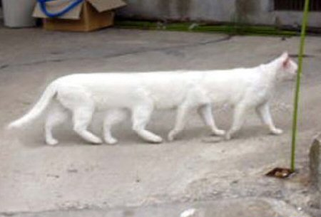

Gato Longo

Ficha Técnica:
Nome: Gato Longo
Nomes alternativos: Longcat, Shiroi, O Infinito, Gato Sem Fim, Nobiko
Raça: Gato Doméstico Branco
Tipo da raça: Dimensional Elástico
Nivel de ameaça: Médio
Características físicas:
- Gato branco de pelagem curta, aparentemente comum
- Comprimento base de 65cm, porém pode se estender infinitamente
- Quando esticado, seu corpo não perde massa nem espessura
- A parte esticada atravessa barreiras dimensionais
- Já foi registrado com mais de 2km de comprimento
Capacidades:
- Estiramento corporal teoricamente infinito
- Capacidade de atravessar dimensões com seu corpo esticado
- As extremidades podem existir em locais completamente diferentes
- Quando totalmente esticado, funciona como uma ponte interdimensional
- Seu corpo é indestrutível durante o estiramento
- Pode conectar dois pontos quaisquer do espaço-tempo
- Existe um rival natural: um gato negro chamado Tacgnol, que possui as mesmas capacidades e é considerado seu oposto cósmico
Fraquezas:
- Quando não está esticado, é um gato completamente comum e vulnerável
- O estiramento parece ser involuntário - ele não controla quando acontece
- Fica desorientado após retornar ao tamanho normal
- Carinho na barriga o impede de se esticar temporariamente
Como contê-lo:
CONTENÇÃO CLASSE OMEGA: O Gato Longo deve ser mantido em uma câmara selada com barreiras dimensionais em todas as paredes. Se ele começar a se esticar, NÃO tente segurá-lo - seu corpo cortará qualquer material como arame quente na manteiga. Evacue o setor e espere ele parar. A última vez que tentaram impedi-lo, ele atravessou três andares da instalação e sua cauda saiu em uma base na Antártida.
Relato da Dra. Yuki:
Dra. Yuki é a principal pesquisadora do Gato Longo e a responsável por descobrir sua natureza dimensional.
"Na primeira vez que ele se esticou no laboratório, achamos que era uma ilusão de ótica. Um gato não pode ter três metros. Mas ele continuou. Cinco metros. Dez. Vinte. Seu corpo atravessou a parede como se ela não existisse. Rastreamos a outra metade dele - estava em Tóquio. A cabeça em nossa base em Genebra e o rabo em Tóquio. Quando medimos a distância real do corpo dele, eram exatamente 65 centímetros. Ele não se estica. Ele dobra o espaço. Nós é que não entendemos o que estamos vendo."
Variações:
O Tacgnol, um gato negro com as mesmas capacidades, é considerado o oposto dimensional do Gato Longo. Segundo lendas da internet, quando os dois se encontrarem e se esticarem em direções opostas, ocorrerá o Catnarok - o fim dimensional de todas as coisas.
História:
A história do Gato Longo ainda está sendo documentada.